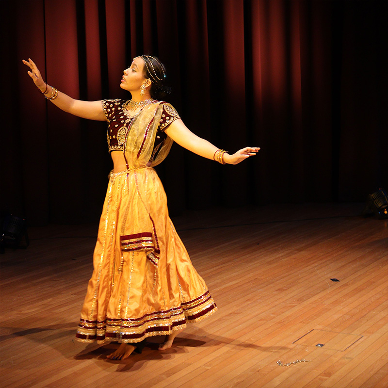
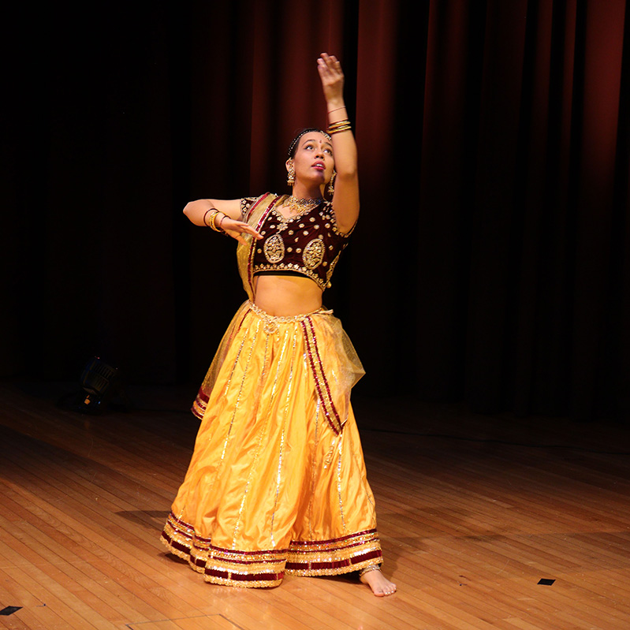
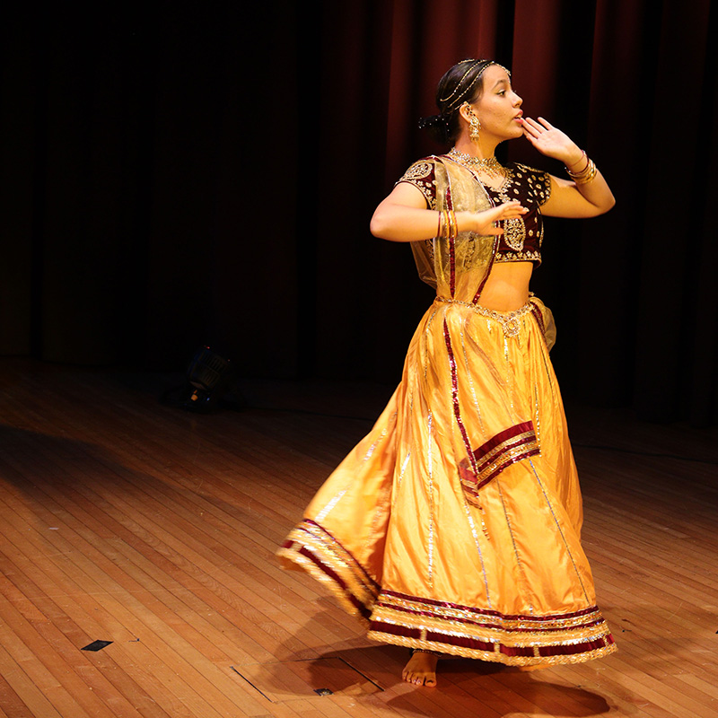

Find class times, equiptment and practice videos here
Updates about performaces and classes
Enrol with us now
The teacher of this class is Usha Bhatnagar, who is an exceptional kathak dancer. At the age of ten, she won the “All India” national dance competition for her Kathak dance performance. She initially learnt the Jaipur Gharana from Guru Shankar Dev Jha, but in her adulthood, she learnt the Lucknow Gharana from a very prestigious and famous Kathak dancer, Pandit Shambhu Maharaj. His ancestors were the people who formed the Lucknow Gharana, it is like a family heirloom passed down to every generation. When Usha auditioned to be in Pandit Shambhu Maharaj’s class, he began crying as he said: “you were born to dance, what took you so long to come to me, where have you been my whole life?” In Aotearoa, it is tough to find a dance class that teaches traditional Kathak. Nowadays, most Kathak classes have mixed various Gharanas together and formed more of a modern, contemporary dance form. With the Kala dance group, you can learn traditional Lucknow Gharana Kathak and preserve this ancient dance form.
Kathak is a classical dance form that dates back to the 4th century BC. The word “Katha” means story, which reflects on how Kathak started out. Kathakars were storytellers who often danced as a form of worship or devotion. Kathak is the only Northern Indian classical dance form, and is also the only Indian classical dance that has both Hindu and Islamic culture (due to Mughal Empires). Much like all classical Indian dance forms, Kathak dance moves don’t vary based on gender/sex. It is a genderless dance form, where male dancer often depicts female characters or vice versa. During the British Raj, all Indian dance forms (including Kathak) were banned, as the British thought they were demonic and vulgar. Kathak was nearly erased by the British and due to this ban, people began secretly dancing in their homes.
Kathak and other classical dance forms managed to stay alive thanks to certain families who developed the dance within the walls of their homes. This caused three distinct variations of Kathak to be formed (known as Gharanas), named after the cities they originated from: Lucknow, Banaras, and Jaipur. The Banaras Gharana has lots of jumping, dancing on plates and spinning on the knees; whereas the Jaipur Gharana has lots of fast spins, complex footwork and powerful warrior-style moves. The Lucknow Gharana (which is the style that this class will learn), focuses on acting and emotions (known as bhaav) as well as complex footwork.